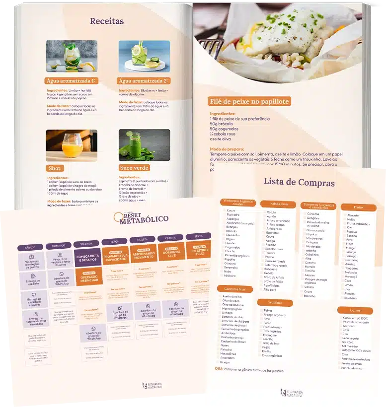
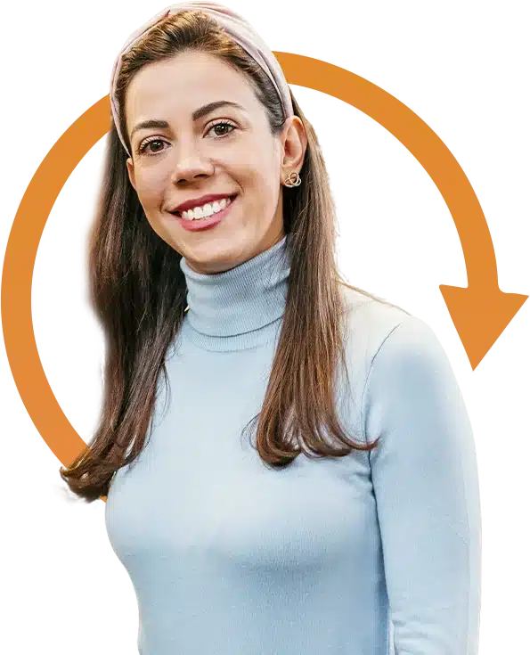

7 dias para colocar o seu metabolismo para trabalhar a seu favor Menos inchaço, mais energia: 7 dias para reorganizar a sua rotina Eu também precisei aprender a cuidar do meu corpo. Agora quero te ajudar, em 7 dias.
Um desafio gratuito no WhatsApp, com um passo simples por dia para alimentação, intestino, sono e movimento.
Sete passos simples, um por dia, para você se sentir mais leve e com disposição de novo. Grátis, pelo WhatsApp.
Sou a Fernanda, nutricionista em Londres. Em 7 dias, no nosso grupo do WhatsApp, te mostro o passo a passo que eu uso.
- 1Entre no grupo hoje
- 2Receba o material no fim de semana
- 3Comece na segunda
Um tema por dia. Passos simples que cabem na sua rotina.
- 1
Operação desinchar
Menos inchaço e retenção de líquidos.
- 2
Provando sua capacidade
Pequenas mudanças na rotina que fazem diferença.
- 3
Adicionando movimento
Exercícios em casa, sem horas de academia.
- 4
Dormindo leve
Uma hora de dormir que ajuda o seu metabolismo.
- 5
Intestino feliz
Por que o seu intestino influencia tanto.
- 6
Fogo alto
Hábitos para o metabolismo trabalhar a seu favor.
- 7
Faxina geral
O passo a passo para continuar depois do desafio.
Depois de anos de dieta, o corpo para de responder. Não é falta de força de vontade.
Você come pouco, se esforça, e mesmo assim a balança e o espelho não acompanham. O Reset é uma semana para reorganizar o básico, com alimentação, intestino, sono e movimento trabalhando juntos.
No fim de semana você recebe calendário, planner e receitas. Todo dia, um desafio curto, e no fim do dia você conta no grupo como foi.
Quero participar grátis

Você se reconhece em alguma destas?
- Já fiz muitas dietas, mas com o tempo parei de ver resultado.
- Ando desanimada com o meu corpo e evito me olhar no espelho.
- Minha rotina é corrida e não consigo seguir dieta complicada.
- Vivo cansada e inchada, sem energia para o dia a dia.
+5 mil mulheres já fizeram o Reset
O que elas mais repetem nas mensagens do grupo, nas palavras delas.
- “Foi a melhor decisão”
- Não senti fome
- Durmo melhor e sinto-me bem
- Gratidão!
- Amei as receitas de sopa de frango
- Não achei difícil
- “Que semana incrível!”
- Bebendo mais água
- Aprendi a estruturar a minha alimentação
- Me sinto bem e feliz
- Toda a atenção e paciência da Fernanda
- Bem tranquilo pra mim
- “Desta vez, me desafiei e segui”
- A disposição melhorou
- Foi todo o suporte envolvido
- Aprendi muito com as dúvidas de todas
- Fundamental na menopausa
- Eternamente grata, Fernanda
- Me puxou de volta ♥
“Saí do grupo e avisei a Fernanda. Daí a pouco estava ela no meu privado me puxando de volta. E voltei! E foi a melhor decisão.”
Mensagens enviadas no grupo e publicadas com autorização. Cada corpo responde de um jeito.
Sou a Fernanda Nadaline, nutricionista em Londres.
Sou especialista em saúde da mulher e sei a importância da alimentação em todas as fases da nossa vida.
Minhas pacientes costumam me procurar com objetivos estéticos, mas o trabalho vai além. Nutrição funcional é saúde, energia, disposição, longevidade e, no fim das contas, felicidade.
Na infância descobri um problema hormonal genético, e desde então cuido da minha alimentação para evitar riscos de osteoporose. Por isso ajudar outras mulheres é o meu propósito.
Entrar no grupo do desafioPerguntas frequentes
É mesmo grátis?
Sim. Os 7 dias do desafio, o material e o grupo do WhatsApp são gratuitos.
Como recebo o material?
Pelo grupo do WhatsApp. No fim de semana antes de começar, você recebe calendário, planner e receitas.
Preciso de academia?
Não. Os exercícios são para fazer em casa, no seu tempo.
Serve para vegetarianas e veganas?
[Confirmar com a Fernanda se as receitas têm opções vegetarianas e veganas.]
Não moro na Europa. Posso participar?
[Confirmar com a Fernanda se o desafio aceita mulheres fora da Europa.]
O que acontece depois do desafio?
No fim da semana a Fernanda apresenta um programa pago para quem quiser continuar acompanhada. Participar do desafio não te obriga a comprar nada.